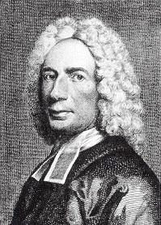

Born: July 17, 1674, Southampton, England.
Died: November 25, 1748, Stoke Newington, England.
Buried: Bunhill Fields Cemetery, London, England.
|
|
|
|
|
|
|
|
|
|
|
|


Died: November 25, 1748, Stoke Newington, England.
Buried: Bunhill Fields Cemetery, London, England.
以撒華滋是被歷代教會推崇爲“聖詩之父”的一位傑出弟兄。因爲是從他起頭開創了一個風氣，使多少神所使用的人，藉著現代的語文，將所得的啓示、經歷、靈感，寫成許多寶貴的詩歌，使後世的教會受益無窮；幷且在當時神也確實藉著所賜給他寫詩的恩賜，將那一個時代的教會，帶進一個屬靈的復興。
我們現在將他的詩歌中爲衆人所知的幾首列舉于後，幷將其中最有名的兩首代表作分別介紹。但願我們每逢唱的時候，那感動以撒華滋的靈也感動我們的心，又願聖靈將神的愛澆灌在我們心�堙C
—、〈我每靜念那十字架〉 “When
I Survey the Wondrous Cross”
（《聖徒詩歌》第69首）
（一）我每靜念那十字架，幷主如何在上受熬，
我就不禁渾忘身家，鄙視從前所有倨傲。
（二）願主禁我別有所誇，除了基督的十字架。
前所珍愛虛空榮華，今爲祂血情願丟下。
（三）看從祂頭！祂脚！祂手！憂情慈愛和血而流！
哪有愛憂如此相遘，荊棘編成如此冕旒？
（四）看祂全身滿被水血，如同穿上朱紅衣飾；
因此我與世界斷絕，世界向我也像已死。
（五）假若宇宙都歸我手，盡以奉主仍覺可羞；
愛既如此奇妙深厚，當得我心、我命、所有。
這是以撒華滋一生所寫詩歌中最偉大的一首，也是教會歷史中，在十架救贖之愛這一類詩歌中，感人最深被主使用最廣的一首。我們先稍爲分析這首詩歌的特點和感覺：
第一節由默念十架而引入救主在十架上受煎熬的情景，但下面一轉就領我們進入啓示的境界中，聖靈將十字架活畫在我們眼前時，就帶來了能力和結果。
“我就不禁渾忘身家，鄙視從前所有倨傲。”知識和啓示的分別就在這�堙C真正在靈�堿搢ㄓQ字架啓示的人，必定爲這能力所震撼，只有看見主釘在十字架上的真實意義和大愛時，才會使我們忘記這可憐的自己，幷且痛悔，鄙視已往引以爲榮的一切虛空驕傲。
第二節更深一步述說看見十字架啓示時，自然引發對主的熱愛和奉獻。既看見主救贖之愛的偉大，就一生一世除了基督的十字架，不願另有所誇，這是緊接著第一節後兩句，看見基督十字架之後所生的反應。
“前所珍愛虛空榮華，今爲祂血情願丟下。”
有何力量能使我們一生所愛所追求的這些虛空榮華，于瞬息之間變成灰塵糞土，而那樣甘心情願的弃如敝屣呢？惟有聖靈領我們到十字架下時，基督捨命的愛向我們所發出的浩大力量！
聖靈工作在每個蒙恩的人身上原則都是不變的；二千年來，多少人都看見了十字架的啓示而産生了同樣的經歷。藉著以撒華滋那樣巧妙的筆觸，以上這兩節詩歌，把千萬聖徒心中對十架大愛所要傾吐而又無法發表的感覺，盡情傾吐出來了。
第三節是這首詩的高峰。他既看見又領受了十字架上基督捨命的大愛，幷因而受到激勵，就傾注他所有的力量，來述說救贖大愛的奇妙和偉大。
“看從祂頭！祂脚！祂手！憂情慈愛和血而流！
哪有愛憂如此相遘？荊棘編成如此冕旒？”
短短四句話真是筆力萬鈞，且把救主在十字架上對罪人的愛以及十架神聖的意義和表現，描寫得淋漓盡致。我們每逢唱到這一節時，也應該將我們所有向著主的愛注入歌詞中，向主傾吐；這四句話真非仗著聰敏的頭腦所能寫出；實系聖靈的筆法，見證十架大愛的奇妙。
最後的一節更是結束得那樣有力，把前面的三節襯托得更爲突出，使人回味無窮。
“假若宇宙都歸我手，盡以奉主仍覺可羞；
愛既如此奇妙深厚，當得我心我命所有。”
有關這首詩歌的見證和故事很多，我們略舉幾則如下：
（一）在法國有一位公爵夫人，早歲寡居，茹苦含辛，撫育三子長大成人，且都品學優良爲衆親友所稱贊；她也把一切希望都寄托在這三個孩子身上。那時正值發現新大陸之時，她有一次聽從了友人的建議，讓這三個孩子往新大陸去淘金，不料，他們抵達美洲後不久，三人在荒山中迷路，死于紅蕃毒箭之下。此訊傳至巴黎，友人不敢告知這位寡婦，以爲她絕不能忍受這樣一個打擊，然而她終于得到消息，當即閉門謝客，拒絕一切從人來的安慰。當她極度憂傷時，就獨自一人靜坐房中，唱這一首詩歌：“我每靜念那十字架，幷主如何在上受熬，我就不禁渾忘身家……”。基督的愛充滿了她，她的愛完全轉移幷傾注在基督身上，勝過了喪子的哀慟。
（二）昔日英國一位名將愛德華羅伯特（Edward Robert），有一位非常愛主的妻子，而他自己是一個頑固的不信者。有一次因他夫人堅邀，勉强陪同去趕布道大會，第二天晚上他自己又去聽道。那天晚上聚會正唱這首詩歌，羅伯特大受聖靈感動。後來他作見證說：“我就是從現在說到明天，也說不出那個感覺。我只記得當我唱到第三節：‘看從祂頭！祂脚！祂手！憂情慈愛和血而流，哪有愛憂如此相遘……’我立刻跪下大哭，我從來沒有這樣哭過，實在是基督的愛感動了我。我站起之後，就走到台前承認救主，回到家�堨蕙Q把這好消息告訴妻子，哪知她正在家��爲我禱告，她爲我的得救，已禱告八年了。”
（三）陶雷（R.A.Torrey）博士和雅查理先生（Charles
Alexander）在英國的大復興四年中，曾領十萬以上的人得救。特別在伯明罕那一次，三十天內得救的人數竟有八千。在一次最高潮的聚會中，陶雷先生用約翰福音三章十六節講了三刻鍾，沒有故事比喻，也沒有巧妙的話語，然而聖靈就是那樣感動了人的心。結束時，就請人站起來接受主，接著一個，兩個，三個，五個，許多人站起來了。正當肅靜等候時，雅查理先生突然唱出了：“看從祂頭！祂脚！祂手，憂情慈愛和血而流！哪有愛憂如此相遘，荊棘編成如此冕旒？”基督的愛，藉著聖靈的能力進入了每一個人的心，許多人泪流滿面，有二百五十餘人陸續到前面來，排列在座位中和講臺兩側，剛好形成一“十”字形，同聲禱告接受耶穌作他們的救主。
（四）英國的威爾斯大復興，可以說是教會歷史中最大的一次復興。伊文羅伯斯初來時，很短時間內，即有七萬八千人得救，接著復興的火燒遍了威爾斯的每一個角落。那時最常用的詩歌就是這一首，幾乎在每處聚會中都能聽見。伊文羅伯斯常是習慣地從聚會的地方往外走，許多人跟著他，一面走一面同聲高唱：“看從祂頭！祂脚！祂手”一路上加入的人越來越多，直走到一個足够容納萬人站立的曠地。還未開始傳揚信息，多少人的心已被聖靈藉著這首詩歌溶化了，在威爾斯大復興時，這一首詩是神所使用的一件最鋒利的兵器。
（五）威廉戴勒（Dr. William Taylor）是一位著名的布道家，他在倫敦貧民區�堙A帶進一個復興。一天晚上約有一千五百人聚會，他們就唱這一首詩歌，唱畢靜享主的同在中。雖然聚會人數如此之多，但是安靜得能聽見彼此的呼吸聲。
二、〈哎呀！救主真曾流血？〉 “Alas！and
Did My Saviour Bleed？”
（《聖徒詩歌》第71首）
（一）哎呀！救主真曾流血？真曾捨命亡躬？
祂肯犧牲祂的超越，爲我這個小蟲？
（二）祂在木上那樣哀嘆，可是爲我罪愆？
憐憫何滿！慈愛何泛！恩典何其無邊！
（三）難怪太陽立變暗烏，隱藏一切榮光，
當神基督造物的主，爲人擔罪而亡。
（四）當我看見祂十字架，也當隱藏羞臉，
心當溶化發出感嗟，眼當流淚自貶。
（五）但這滿腔憂傷，不能稍還主愛的債；
主我在此奉上一生，聊表此心感戴。
這是另一首以撒華滋所寫關于十架救贖的詩歌，也是爲歷代聖徒所寶貴的。被神所大用的失明詩人（Fanny
Crosby）就是因聽這一首詩歌，受感動而接受主的救恩。當聖靈將基督的十字架啓示在人心�堮氶A一定同時發生兩個結果：一面是當人在啓示中看見十架异象時，聖靈就將神的愛澆灌在人心�堙F另一面當聖靈將人帶到十架跟前時，人才會真正覺得自己的卑微可憎，罪孽的深重可怕，對主的大愛覺得虧欠和感激，因而將自己完全奉獻在主手中，這一首詩真是寫透了一個人在聖靈啓示的大光中，看見主救贖大愛時的感覺和經歷。
第—、二節說到當他真看見十架救恩時所生的震驚！啓示和知識是完全不同的兩個境界，這一個啓示在我們靈��産生何等的能力、熱愛驚奇！竟然肯又竟然能爲我這樣一個小蟲，舍了祂尊貴的生命！第三節說到十架所産生影響力的偉大，整個宇宙整個舊造都被神的大愛所震動！而第四節是整首詩的最高峰：“當我看見祂十字架，也當隱藏羞臉，心當溶化發出感嗟，眼當流泪自貶。”使我們的心溶化，使我們的眼流泪，使我們憎惡自己羞愧無比！末了一節是自然的結果，我們無法稍還主愛的債，只有“奉上一生，聊表此心感戴。”但願每逢我們唱這首詩的時候，聖靈再一次領我們到加略地。
三、〈向前直往錫安〉（《聖徒詩歌》第537首）
四、〈父神阿，祢在羔羊�堙r（《聖徒詩歌》第44首）
五、〈我是否要背負十架？〉（《聖徒詩歌》第324首）
六、〈我們當來同聲歡呼〉（《聖徒詩歌》第127首）
七、〈普世歡騰〉（《聖徒詩歌》第47首）
八、〈我歌唱神的大權能〉 （“I
Sing the Mighty Power of God”）
九、〈全地居民都當揚聲〉 （“Let
All on Earth Their Voices Raise”）
十、〈得救這聲何等可樂〉（Salvation！O
the Joyful Sound！）
十—、〈神是我們永遠保障〉（“Oh
God，Our Help in Ages
Past”）
十二、〈主日〉（“This Is
the Day the Lord Hath Made”）
https://www.thechurchincupertino.net/Books/Hymn_Writers_&_Their_Hymns.pdf
《诗人与诗歌》一 史伯诚
http://www.bodani.cn/article/?bk=100859&v=6#138421

作者：史伯誠
ISBN：9780942164190
出版社：美國見證
出版日期：1988-4-9
尺寸：140*210 mm
頁數：312頁
重量：380克
■內容簡介
聖詩史可說是近代教會復興的透視。而每一首聖詩作者背後都有個甜美的故事。透過本書編者搜羅的豐富資料，讀者可對不少詩歌及其作者有更多的了解。
■作者簡介
史伯誠（Newman Sze），台灣嘉義地方教會同工，美國基督見證使團（Testimony of Christ Mission）創始人。
1946年，上海教會恢復聚會時，李常受和汪佩真開展校園福音工作，特別是交通大學），得著許多積極追求的青年基督徒。史伯誠因此得救受浸。
目錄
1. 聖伯納多 ST. BERNARD OF CLAIRVAUX
2. 馬丁路德 MARTIN LUTHER
3. 保羅格爾哈特 PAULS GERHARDT
4. 撒母耳盧得福 SAMUEL RUTHERFORD
5.安若斯可貞 ANN ROSS COUSIN
6. 新生鐸夫 ZINZENDORD
7. 腓立道曲奇 PHILP DODDRIDGE
8. 威廉古柏 WILLIAM COWPER
9. 托普雷第 AUGUSTS MONTAGUE TOPLADY
10. 湯姆斯凱立 THOMAS KELLY
11. 蒙哥馬利 JAMES MONTGOMERY
12. 傑姆斯廸克 JAMES GEORGE DECK
13. 腓烈德立克威廉飛柏 FREDERICK WILLIAM FABER
14. 威廉俄珥卡庫新 WILLIAM ORCUTT CUSHING
15. 腓力白力斯 PHILIP P. BLISS
16. 雷莉亞內樂莫理斯 LELI NAYLOR MORRIS
17. 和受恩教士 MARGAET ELIZEBETH BARBER
18. 艾梅卞邁可 AMY CARMICHAEL
19. 倪柝聲 WATCHMAN NEE


http://www.hymncompanions.org/index5.php
C
Caldbeck, George T. 柯貝克 10/13
Carlyle, Thomas 卡萊爾 1/5
Carmichael, Ralph 卡瑪珂 3/4,5/15,7/30
Carter, Russell Kelso 卡特 2/25, 2/29
Cary, Alice 卡愛理 7/17
Cary, Phoebe 卡斐比7/17
Cassel, E. T. 凱瑟 11/12
Caswall, Edward 卡詩爾 5/5
Cenneck, John 辛耐克 8/8
Chang,C.Y. 張千玉 2/5
Chao, Calvin 趙君影 7/25,8/9
Chao, David 趙蔚然 8/20
Chao Tsu-chen 趙紫宸 3/2
Chapman, J. Wilbur 查普曼 4/14
Charlesworth, Vernon J. 查理華 9/7
Chean Min-Yao 簡銘耀 7/8
Chen, Stephen Z.Y. 陳贊一 5/4
Chen, T.S. 陳天賜 2/5
Chi , David 祁少麟 7/12
Chia Yu-Ming 賈玉銘 1/27,9/23
Chiang Yi-Tseng 蔣翼振 12/31
Chisholm, Thomas 戚曉睦 3/31,9/4
Chong, Henry 張漢林 4/12
Chorley, Henry F. 柯理 11/5
Chow Lien-Hwa 周聯華 6/16,10/7
Chou Yuen Feng 周裕豐 10/11
Christiansen, Avis B.關馨珊 4/3, 9/27,10/22
Chuang, Chun-Yuang 莊春榮 8/5
Chung, Peter 鍾世豪 3/22
Clark, Eugene L 柯友勤 2/20,6/11,10/22, 10/30
Clark, John 柯拉克 7/28
Clarkson, E Margaret 柯樂笙 5/17,10/22
Clayton, Norman J. 克來敦 6/12
Clephane, Elizabeth C. 柯荔芬 10/17
Cluff, Samuel 柯樂夫 6/14
Collins, Jamie Owens 柯潔美 9/3
Conkey, Ithamar 孔基 9/14
Converse Charles C. 孔文士 12/3
Cooke, George W. 柯克 3/16
Cooper, W. G. 郭伯 9/28
Cornelius, Maxwell N. 柯尼利 5/25
Cornell, W. D. 康乃爾 9/28
Cosmas the Melodist 柯斯麥 9/22
Cousin, Anne R.古霑安 3/27
Cowper, William 顧柏 7/31,8/12,11/3,12/10
Croft, William 郭夫特 11/12,11/20
Croly, George 克羅 6/5
Crosby , Fanny J. 芬妮克羅斯比
2/2,3/5,3/11,3/27,3/28,3/30,4/21,4/30,5/6, 9/12,10/15,11/27
Crouch, Andrae 柯安祺 5/15,5/19
Cull, Robert 古路柏 4/4
Cushing, William O. 古欣 4/17,5/14,9/16,9/30,11/19
Cutler, Henry S. 葛特勒 12/12
D
Davis, Frank M.戴維思 4/22
Davis, Geron 戴杰朗 9/6
Dearman, Kirk 田爾邁 2/1
Deck, James George 譚克 7/5
Derricks, Cleavant 德律克 4/11
Doane, William 杜恩 2/16,3/11,3/28,5/3,9/12,10/15, 11/13,11/27
Doddridge, Philip 陶德瑞 8/11
Dorsey, Thomas A. 陶賽 4/30,5/21
Dougall, Neil 陶高樂 12/10
Draper, William H. 屈柏 3/15
Duff, M. 杜敷 3/6
Duffield, George, Jr. 鄧斐德 10/25
Dunlop, Merrill 鄧樂普 2/18,11/6
D’Urhan, Chretien 杜罕 3/27
Dwight, John S. 杜懷德 12/24
Dykes, John, B. 戴克 3/14,4/16,5/11
E
Edmunds, Lidie 艾門斯 7/1
Ellerton, John 依萊敦 11/5
Elliott, Charlotte 伊洛蒂 3/21,6/6,12/26
Elliott, Emily E. S. 伊茉莉 12/26
Elliott, James William 伊樂德 7 /14
Ellor, James 艾勒 6/17
Elvey, George J. 艾維 11/24
Espinosa, Eddie 艾詩賓 11/19
Esther Kerr Rusthoi 羅詩灝 (首頁 跋)
Evans, David 艾文思 9/13,9/18
Evertt, Asa B. 艾瑞德 7/2
Excell, Edwin O. 艾克賽 11/25
F
Faber, Frederick W. 費柏 6/16
Farjeon, Eleanor 范瓊安 9/13
Fawcett, John 福賽特 9/23,10/19
Featherston, William R. 費司通10/12
Ferguson, Manie Payne 傳梅妮 10/31
Fillmore, James Henry 費爾模 7/24,10/4
Fisher, Albert C. 費歇 6/23
Fisher, William G. 費雪 6/1,11/13
Flint, Annie J. 傳安妮 1/21
Francis of Assisi 聖法蘭西斯 3/15,10/6
Francis, Samuel 福錫斯 9/21
Foster, Stephen 福斯德 1/9
Fry, Charles W.傳雷 8/24
G
Gabriel, Charles H. 蓋博爾 1/2,3/6, 5/7,7/9, 8/13, 8/17,9/25,9/29
Gaither, Gloria 葛蕾亞 6/10,12/15
Gaither, William 比爾蓋瑟 4/30,6/10,8/21,12/15
Geibel, Adam 蓋勃 11/29
Gibbs, Ada Rose 吉波絲 1/27
Gilmour, Henry 吉而模 5/8,6/3
Gilmour, Joseph H. 紀而摩 1/6
Gladden, Washington 葛萊敦 6/25
Glaser, Carl G. 葛拉撒 2/28
Gordon, Adoniram J. 高登 10/12
Goreh, Ellen L. 高蕾 9/8
Goss, John 郭斯 6/29
Gould, John E.古德 6/1
Graeff, Frank E. 葛瑞福 1/23
Grant, David 葛大偉 1/25
Grant, Robert 葛萊特 11/12
Gretry, Andre 葛玨 7/1
Grimes, Homer W. 葛萊姆 3/19
Grose, Howard 古路司 11/14
Gruber, Franz 格羅伯 12/24
Gurney Dorothy 葛妮 6/22
H
Habershon, Ada H. 哈琵曉 10/20
Hall, Lincoln 郝林肯 1/23
Hamblen, Stuart 韓伯倫 8/16
Hammontree,Homer 韓蒙勸 10/22
Handle,,George Frederick 韓德爾 10/4, 12/25
Hankey, Katherine 韓凱玲 11/13
Harkness, Robert 哈克斯 10/20
Hasse, Ernie 海斯 3/26
Hastings Thomas 海斯汀 2/7,2/11,3/10,12/10
Hatch,Edwin 海琦 8/7
Havergal, Frances R. 海雯格 1/1,3/19,4/6,6/29,8/1,11/17
Hawkins, Floyd W. 郝京士 12/19
Hawks, Annie S. 郝安妮 7/11
Hawthorne, Alice 霍桑 10/3
Haydn, Frez Joseph 海頓 4/15
Haydn, Johann M. 海敦 5/23,11/12
Hayford, Jack 海福 5/26
Heber, Reginald 希伯 10/14,12/12
Hedge, Frederick H. 海琦 1/5
Hemy, Henri F. 海彌 6/16
Herrell, N. B. 海瑞 5/17
Herrick, Alameda 赫理克 2/20
Hews, George 胡喬治 4/6
Hewitt, Eliza E. 修慧德 4/26
Hine, Stuart K. 韓恩 1/16
Hodges, Edward 賀愛德 2/14,
Hoffman, Elisa A.霍夫曼 4/20
Holbrook, Joseph P. 何柏樂 7/19
Holden, Olive 霍登 6/17
Hopkins, John Henry Jr. 霍金斯 12/23
Hopper, Edward 霍柏 6/1
Horsley, William 郝詩理 7/31
Howard, Cuthbert 郝華 12/10
Howe, Julia Ward 郝裘麗 7/13
Howies, T. 霍偉斯 12/25
Hsiao, Tyzen 蕭泰然 9/5
Hu Te-Ngai 胡德愛 3/2
Hu, W. S. 胡問憲 7/2
Huang ,Chen Mou 黃楨茂 7/10,7/25,11/2,12/4
Huang, May 黃美廉 7/12,10/10
Hudson, Ralph E. 哈得遜 1/7,5/20
Hughes, John 休斯2/11
Hull, Eleanor H. 賀依理 9/18
Hultman, John A.郝德門 7/23
Hussey, Jennie E. 胡茜 5/20
Hustad, Donald P. 哈斯達 12/14
Huston, Frank C. 哈世敦 3/6,12/11
I
Irvine, Jessie S. 歐文茜 1/25
Iverson, Daniel 艾文生 6/21
J
Jackson, Robert 賈克遜 8/7
James, Mary D.詹玫蕊 4/28
Jeffery, John A.傑法瑞 8/3
Jiao Wei-Zhen 焦維真 1/27
John of Damascus 大馬士革約翰 9/22
Johnson, Norman E. 莊遜 1/27,2/19,7/28,9/18
Jones, Chalres P. 仲斯 12/27
Jones Ruth Caye 瓊絲 10/18
Jude, William H.裘德 2/3
Judson, Alfred 裘遜 9/8
K
Kaiser, Kurt F.蓋瑟 7/30
Kam, Peter 甘彼得 12/14
Keble, John 祁柏 12/13
Keene, Robert 金羅伯 9/9
Kelly, Thomas 凱利 3/13
Kendrick, Graham 甘杰克 11/1
Kethe, William 紀思 11/12
Kidder, Mary A. 紀妲 6/6
Kilpatrick , Bob 寇伯荃 9/19
Kirk, James M. 寇克 10/31
Kirkpatrick, William J. 寇伯克 2/2,2/17,2/26,3/31,5/8,5/20,7/1
Knapp, Phoebe P.奈腓比 4/21
Koschat Thomas 高沙特 1/25
Kou, David S.J. 寇順舉 7/21
Kou, S. Y. 寇世遠 1/24,9/23,11/14
L
Lane, Spencer 雷恩 1/12
Landon, Stewart 藍敦 10/3
Lafferty, Karen 賴維蒂 7/26
Lathbury, Mary A. 賴柏麗 6/19,11/23
Leech,Lida S. 李玨 2/8,7/27,8/22,11/29
LeFevre, Mylon 婁斐然 8/14
Lehman, Frederick M.李曼 2/9
Lehman, Louis Paul 李沐恩 12/5
Lemmel, Helen H. 李茉 2/10
Liang Chi-Fang 梁季芳 12/21
Lillenas, Haldor 李理納 1/3,4/3, 4/18,6/3,9/8
Lin Ho-Chen 林和成 9/2
Lin, Samuel 林雲郎 12/18
Lister, Mosie 李士特 10/1,12/20
Liu Shia 劉俠 3/1
Loes, Harry D. 樓斯 4/9,9/27
Loh Sian-Chhun 駱先春 5/13
Longstaff, William D. 朗詩甫 12/17
Lorenz, Edmund S. 勞倫斯 4/25,10/6
Lowdon, Harold C. 陸敦 3/31
Lowry, Robert 勞瑞 3/25,3/30,4/17,5/14,7/11
Luo Mu-Guang 羅慕光 2/10
Luther, Charles C. 羅德 11/9
Luther, Marin 馬丁路得 1/5
Lvov, Alexis F. 盧甫 11/5
Lyon, Meyer 朗昂 3/24
Lyte, Henry F. 賴特 1/14,3/26,6/28
M
Ma Ge-Shun 馬革順 1/25
Main, Hubert P. 梅恩 12/1
Maker, Federick C. 梅格 10/17,12/16
Malan, Henri A.C. 馬蘭 8/1
Malotte, Albert Hay 梅樂 12/14
Mann, Arthur H.馬安 7/14
Mao Zong-jie 毛宗杰 9/15
Marlatt, Earl B. 馬萊特 8/15
Marsh, Charles H. 馬虛 4/14
Marsh, Simeon B. 馬修 5/18
Marshall, W.S. 馬歇兒 10/31
Martin, Civilla D. 馬珊薇 5/7,6/26
Martin, George 馬丁 8/27
Martin, W. C. 馬頂 8/17
Martin, W. Stillman 史蒂門馬丁 6/26
Mason, Harry S. 梅海利 8/15
Mason, Lowell 梅遜 2/28,3/13,3/14,3/22,5/24 ,10/14, 10/19,11/3,11/12
Matheson, George 馬德勝 4/8, 8/27
Mathews, Timothy R. 馬太斯 12/26
Maxwell, Mary E. 梅詩蕙 1/27
Mays, Claudia 克綠蒂 2/9
McAfee, Cleland B. 麥卡斐 6/30
McDaniel, Rufus H. 麥但尼 9/25
McGranahan, James 麥格翰 1/8,1/30,4/1,5/25,12/22
McHugh, Phil 麥克修 12/8
McKinney, B.B.麥堅尼 1/20,1/26,2/5, 2/27,5/1, 6/15,8/7,10/3,11/13
McKinney, James 麥金年 12/14
Medley, Samuel 梅理 10/4
Mendelssohn, Felix 孟德爾頌 1/14,1/31,5/10,10/16
Messiter, Arthur H. 梅西特 5/31
Mieir, Audrey 茂奧玨 2/27,8/31,9/29
Miles, C. Austin 麥爾斯 4/10,6/11,8/6
Milgrove, Benjamin 梅格夫 8/8
Miller, Rhea F. 密勒夫人 2/15
Minor, George A.孟納 7/3
Moen, Don 唐蒙恩 3/7
Mohr，Joseph 莫爾 12/24
Monk, William H. 孟克 6/6,6/28
Monod, Theodore 莫諾德 12/22
Montgomery, James 蒙哥馬利 1/12,1/25,3/24
Moody, May W. 慕韋玫 7/15
Moore, John M. 穆約翰 1/20
Moore, Thomas 穆爾 2/7
Morris, Kenneth 毛理斯 4/30
Morris, Lelia N.莫莉亞 2/12,4/5,
Mote, Edward 穆特 9/1
Mountain, James 孟敦 11/17
Mui, Cainan 梅廣文 5/4
Mullins, Rich 穆林斯 9/10
Mund, E. D 孟德 10/6
Murphy, Ann S. 牟霏安 6/13
N
Naegeli, H. G. 倪格理 10/19
Nagler, Etha M. 奈依莎 9/7
Nathan, El 楠敦 1/30
Neale, John M. 倪約翰 5/5,9/22
Neander, Joachim 倪安德 6/4
Nee , Waterman 倪柝聲 1/9,5/22
Nehoria, Mayer 倪何拉 2/9
Nelson,Greg 倪而森 12/8
Neumark, Gerog 紐馬克 5/10
Newman, John Henry 紐曼 4/16
Newton John 約翰牛頓 8/12,11/3,12/10
Niles, Nathaniel 奈爾斯 6/2
Nusbaum, Cyrus S. 鈕思本 10/29
Nystrom, Marty 納斯君 6/27
O
Oatman, Johnson Jr. 歐德曼 1/2,11/25
Ogdon, Ina Duley 歐彤 1/22
Olives, Thomas 歐律伐 3/24
Orr, J. Edwin 奧愛文 2/19
Orsborn, Albert 歐思邦 12/28
Owens, Jimmy 歐文史 9/3,9/11
P
Palmer, HoratioR. 鮑茂 4/4 ,11/18
Palmer, Ray 潘默 5/24
Pao, Alice C. 鄭敏熙 5/2
Paris, Twila 白麗絲 11/16
Patten, A.B. 潘敦 6/16
Peace, Albert L.皮士4/8
Peek, Joseph Y. 皮克 8/3
Pei Hui-Zhen 裴慧真 1/27
Perkins, William O. 白敬士 6/6
Perronet,Edward 柏洛納 6/17
Peterson, John W. 彼得生 2/4,5/17,6/9,6/24,7/24,11/26
Phelps, Sylvanus D. 費爾普 3/25
Phillips, Philip 費列浦 7/17
Pickup, F. H. 畢克普 10/30
Pleyel, Ignas J.浦萊爾 8/8
Plumptre, Edward H.卜倫坡 5/31
Pollard, Adelaide A.包愛德 1/28
Pounds, Jessie Brown 龐絲 2/23,10/4
Prentiss, Elizabeth P. 潘黛絲 2/16
Price, Ben. H. 潘瑞斯 12/4
Pryor, C. E. 潘芮而 3/17
Purday, Charles H. 潘但 4/16
Q
Qi Qing-Chai 戚慶才 11/11
Qi Chang-Yi 戚長毅 11/11
R
Rader, Paul 雷特 1/4
Ramboo, Dottie 芮葩 9/17
Ramsey, Benjamin M. 芮散 4/10
Rankin, Jeremiah E. 欒勤 4/25
Ray, Maude Louise 雷沐德 10/30
Redhead, Richard 芮德海 3/10
Reed, Ida L. 呂愛德 2/21,9/25
Reichardt,Liose 雷露依 6/29
Reinagle, Alexander R. 芮耐格 12/10
Reitz, Albert S. 呂茲 3/8
Reynolds, Isham E. 芮檽斯 10/27
Reynolds, William J. 芮諾士 7/28
Richard, Brinley 李奇 9/21
Rimbault, Edward F. 林伯特 8/11
Rippon, John 呂本 6/17,9/9
Roberts, Daniel C 羅柏志7 /4
Robinson, Robert 羅賓遜 5/27
Rodeheaver, Homer 羅海孚 1/22,8/10,8/26
Root, George F. 羅德 2/24,3/30,4/17
Roth, Elton M. 羅琥 8/19
Rounsefell, Carrie E. 羅詩斐 3/17
Rourledge, Keith 羅德律 1/29
Routh, Gene 羅復 10/3
Rowe, James 羅雅各 6/23
Runyan, William M. 任英 1/21,9/4
Rutherford, Samuel 路德福 3/27
S
Sammis, John H. 賽密士 12/7
Sankey, I.Allan 孫愛倫 3/5
Sankey,Ira 孫基 4/17,4/24,6/8,6/14,8/24,9/7,9/16, 9/30,11/9,11/19,12/26
Schmolck, Benjamin 席慕渴 7/19
Scholfield, J. F. 史古菲 8/23
Schuler, George S. 舒勒 3/23
Schumann, Robert A. 舒曼 1/27,4/6
Scoog, Andrew L.史固格 11/22
Scott, Clara H. 史谷蘭 4/4
Scriven, Joseph 史克文 12/3
Shaw, K. 卲光 5/9
Shaw, Knowles 蕭諾斯 7/3
Shea, George Beverly 謝伯偉 1/7,1/16,2/15,9/4
Sheppard, Franklin L. 謝柏德 10/9
Sheppard, Thomas 謝伯達 10/30
Sherwin, William F.蕭文 6/19,11/23
Showalter, Anthony J. 蕭華德 4/20
Shrubsole,William, 施布索 6/17
Shurtleff, Ernest W. 蕭得福 5/16
Sibelius, Jean 西貝流士 1/15
Simpson, Albert B. 宣信 2/25,2/29,3/9,4/3,5/22,9/26,11/7,12/28
Skillings, Otis 施杰林 12/30
Skog, Andrew L. 史固格 11/22
Slade, MaryB.C 施蕾達 7/2
Sleeper, William T. 史理伯 11/15
Sleeth, Natalie 史麗芙 11/17
Small, James G. 史慕爾 5/29
Smart , Henry 司馬忒 5/16,8/25
Smith, Howard 史豪華 6/23
Smith, Alfred B. 史亞瑟 1/21,6/9
Smith, Henry P.史密士 6/25
Smith, Henry 施敏士 8/4
Smith, Leonard 史理納 7/6
Smith, Deborah D. 史黛碧 7/7
Smith, Michael W. 史邁可 7/7
Smith, Oswald J. 史奧華 1/11,8/10,8/30,9/29,10/30
Smyth, Harper G. 史浩博 11/26
Spafford, Horatio G. 施彼福 6/7
Spohr, Louis 史博 5/11
Stainer, John 史丹納 7/20
Stanphill, Ira F. 史丹斐 3/16,4/19,12/29
Stallings, John 史托靈 11/28
Stead, Louisa M.史露意 2/17
Stebbins, George C. 史滌平 1/28,2/21,5/29,11/9,11/15,12/17
Steffe, John W. 史蒂斐 7/13
Stites, Edgar Page 斯泰慈 4/24
Stoke, Elwood H. 史篤克 4/12
Stockton, John H, 史篤敦 2/22
Storm-,August Ludvig 史篤姆 7/23
Stowe, Harriet B. 史海蕾 1/31
Su, John 蘇佐揚 8/2,8/9,11/4
Sullivan, Arthur S. 沙利文 1/18,8/27
Sung, John 宋尚節 7/10
Stephen the Sabaite 聖司提反 9/22
Sweney, John R. 斯威尼 4/12 ,4/26
T
Tai, James 臺雅各 5/8,8/8
Tallis, Thomas 陶爾斯 7/31
Tang Shou-lin 唐守臨 9/15
Tang, Stanley 唐主謙 8/28
Tappam, William B. 戴盼 10/26
Teng, Philip 滕近輝 12/4
Tey, David H. 鄭國治 4/13
Tien Ching-Fu 田景福 12/21
Thomas, Eugene 湯默士 7/28
Thompson, Will L.湯慕聖 7/18, 8/18
Thomson, Mary Ann 湯舜 8/25
Thrupp, Dorothy A. 斯綠波 1/14
Tillman, Charles D. 田爾門 3/18,4/28
Tindley, Charles A. 丁德理 5/6,7/29, 11/21
Tomer, William Gould 陶默 4/25
Tong, Caleb 唐崇明 11/8
Tong, John 唐約翰 12/18
Tong, Stephen 唐崇榮 5/12
Toplady, Augustus M. 涂來德 3/10,10/17
Tovey, Herbert G. 杜範 3/16
Towner, Daniel B. 唐納爾 2/23,3/6,12/7
Tullar, Grant Colfax 杜勒 5/28,8/3
Tweedy, Henry H. 邱偉迪 5/23
Tyng, Dudley 丁達禮 10/25
U
Ulmer, Kate 鄔凱悌 2/26
V
Van De Venter,Judson W. 范德 7/16
Vail, Silas J. 魏爾 5/6
Van Dyke, Henry 范戴克 2/14
Vincent, Charles L. 范笙 10/13,12/22
Viner, W.L. 范納 2/11
Von Brethorst, Leona 馮貝絲 10/8
Von Schlegel, Katharina 許蘭格 1/15
Von Weber, Carl Maria 韋伯 7/19
W
Wade, John 韋達 9/9
Walch, James 華虛 8/25
Walford, William 華福特 1/19
Walter, Howard Arnold華爾德 8/3
Walton, James George 華頓 6/16
Wang Ji-Fa 王磯法 5/9
Wang, Lillian 王麗玲 5/3, 6/20,8/28,10/10
Wang, M. T. 王明道 12/31
Warren, George W. 華倫 7/4
Watson, George D . 華森 3/16
Watts, Issac 華茲 11/20,12/25,5/20
Waugh, Joseph S. 華約瑟 1/22
Webb, George 韋浦 10/25
Webbe, Sanuel Sr. 韋山慕 2/7
Webster, George O. 韋士德 8/13
Webster, Joseph P. 韋斯德 1/24,12/1
Weeden, Winfield S. 溫敦 7/16
Weigle, Charles F. 韋格而 5/30,8/17
Wen, J. H. 溫仁和 3/8
Wenham, J. T. 文海 8/3
Wesley, Charles 查理衛斯理 2/28,5/18,11/1
Wesley, Samuel 撒母耳衛斯理 1/1
Whittier, John Greenleaf 蔚提爾 12/16
Whittle, Daniel W. 韋特 1/8,1/30, 4/1,5/25,7/15
Wiant, Bliss 范天祥 12/21
Wilkinson, Kate B.魏耿笙 9/24
Williams, Clara T. 魏珂蕾 1/7
Williams, Thomas J. 威廉士 9/21
Williams, William 魏理斯 2/11
Wilson, Bertha Mae 韋柏梅 4/18,6/3
Wilson, Emily D. 韋愛茉 8/23
Wilson, Ira B.威爾遜 3/23
Winkworth, Catherine 溫凱玲 5/10, 6/4
Winner, Septimus 溫納 10/3
Work, John Jr.華克紹 2/13
Worrell, Edna R.華愛娜 4/27
Wu, Winston 吳文棟 3/29
Wu, Y.H. 吳榮華 3/18
Wyrtzen, Don 華誠 9/26
X
Xiaomin 小敏 4/27, 5/29
Y
Yang Ching-Ts’iu 楊鏡秋 12/21
Yang, Ernest Y. L.楊蔭瀏 12/31
Yang, Wang-Shun 楊旺順 5/2
Yang, Warren 楊敏詩 2/8,12/6
Yates, John Henry 晏詩6/8
Yeh, Francy 卲家菁 10/24,12/2
Yeh , Linda 葉薇心 3/29, 5/3, 7/12
Yeung, David P. L.楊伯倫 1/14,1/21,3/1,4/13,6/21,7/23,10/23
Ying, Peter 應秉德 9/5
Yon, Pietro A. 榮恩 12/22
Young, George A. 楊喬奇 1/3
Yuan, Zhiming 遠志明 12/2
Z
Zinzendorf, Nicholas Ludwig von 辛善鐸 3/3
Zscheck, Darlene 恰珂 12/9